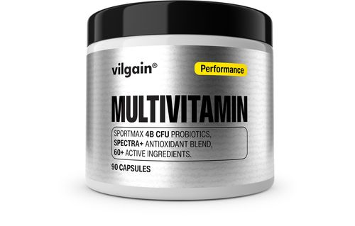

Multivitamín
Multivitaminy obsahují kombinaci různých vitaminů a minerálů. Pomáhají doplnit živiny, které mohou chybět ve stravě. Lidé je často užívají pro podporu zdraví a imunitního systému. Nepředstavují náhradu pestré stravy. Je důležité dodržovat doporučené dávkování.
Účinky multivitaminů závisí na individuálních potřebách organismu. Některé studie ukazují pozitivní vliv na energii a obranyschopnost. Přehánění s dávkami může být škodlivé. Výběr kvalitního výrobku je klíčový. Při správném užívání mohou být užitečným doplňkem stravy.
